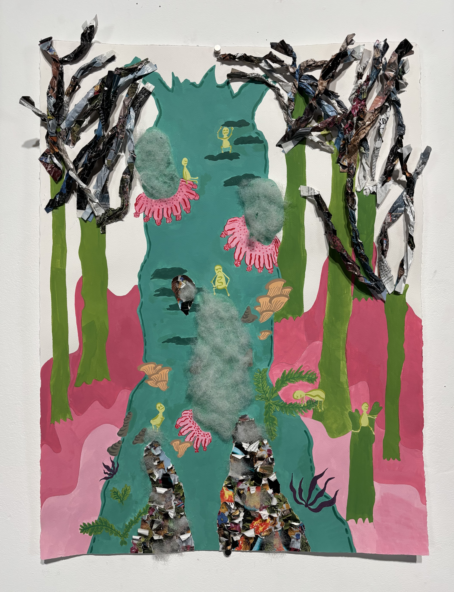
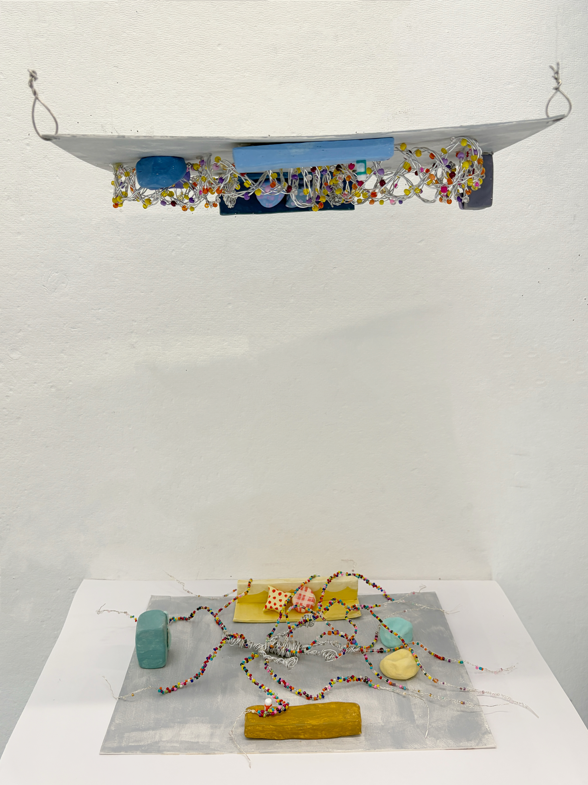
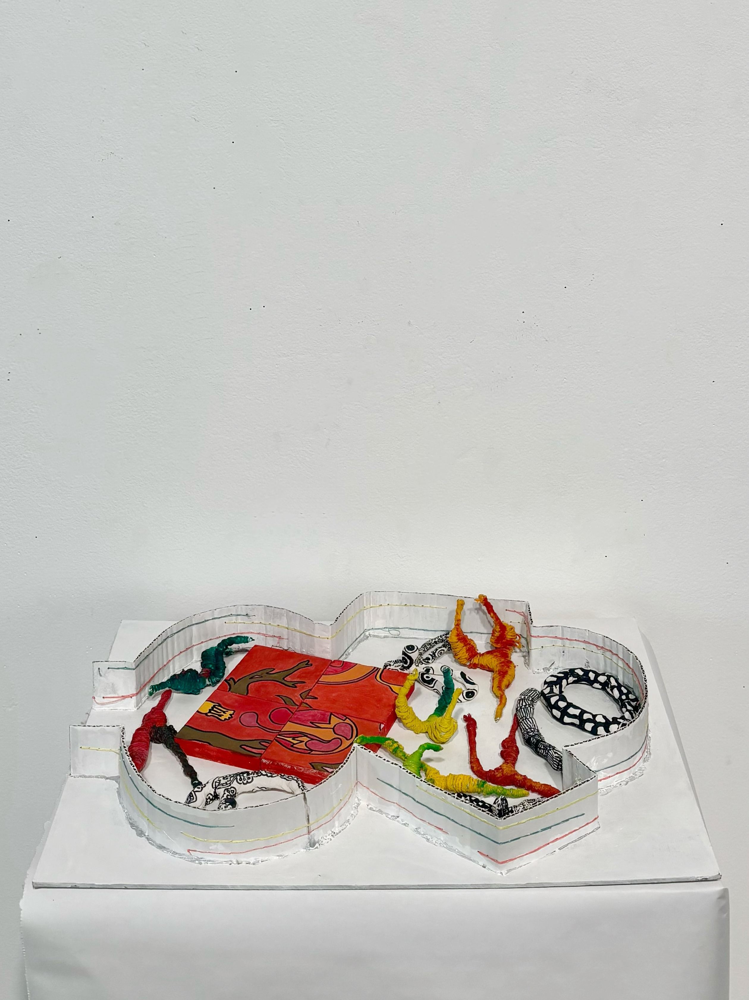
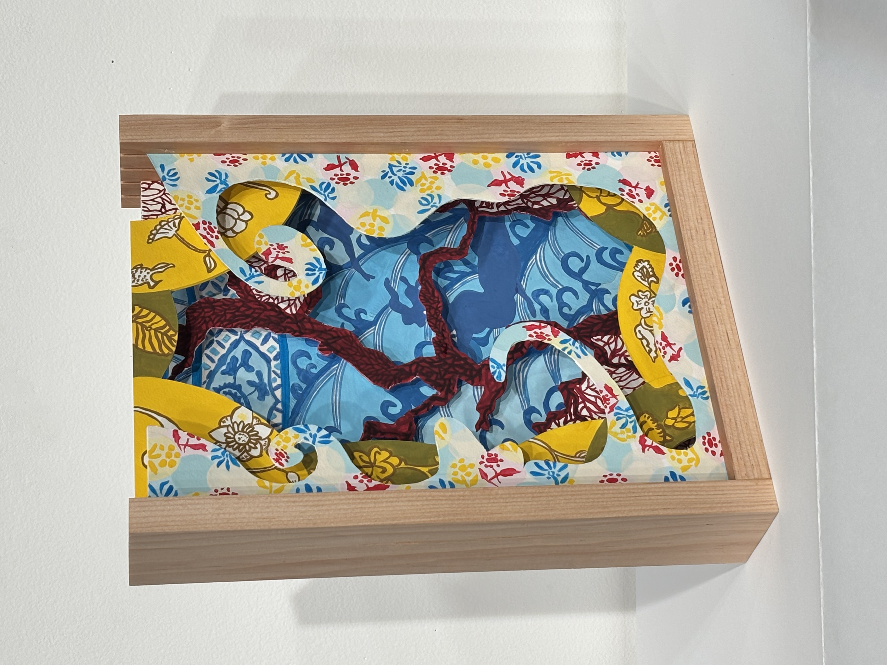

Studio Art
A more detailed version of this section is under construction! Here are some previews. Check back regularly if you are interested. You definitely are :D

Cyclical
Gouache, magazine paper, and cotton · Spring 2026
This work explores my emotional experience of PMS and the way the same feelings return each month. A fallen tree trunk is covered with small humanized figures embodying frustration, emotional extremes, and physical pain, while new seedlings grow beside the decaying wood — breakdown and regeneration as parts of one recurring biological rhythm. A layered magazine-paper canopy echoes circular forms throughout, reinforcing cyclicality.

A symbiosis
Copper wire crochet, beads, and air-dry clay · Spring 2026 · Co-created with Isabel Li
This piece explores interdependence between humans and animals — specifically how seizure dogs assist people with epilepsy by sensing early signs of an oncoming episode. Displayed upside down: the lower board visualizes scent molecules dispersing from the body; the upper section traces the dog’s movement path as it detects those signals and guides itself toward medication, water, and blankets.

Sorted?
Air-dry clay, wood, thread, wire, and cardboard with gouache · Spring 2026 · Interactive installation
A reflection on — and critique of — my own habit of keeping every thought and feeling organized, avoiding chaos. The piece is interactive and deliberately playful, mimicking a puzzle game so the audience tries to organize the components and gradually discovers that nothing can be perfectly fixed or contained. The palette — black, white, red, yellow, green — is drawn from the colors common to children’s toys.

A book of ceramics
Layered cut paper with slotted wooden standing frame · Fall 2025
An exploration of how 2D texture and color can produce a sense of depth — flat paper cutouts layered into a carving-like 3D work. Textures drawn from Chinese porcelain and pottery are paired with a traditional palette. A slotted wooden standing frame holds the boards and allows their order to be rearranged, so foreground, mid-ground, and background can be recomposed.